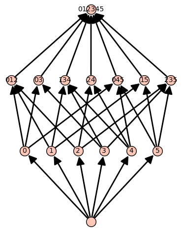

Graded Posets
We include a class called GradedPoset. This class keeps track of basic information we need to compute the various generating functions associated with a hyperplane arrangement.
GradedPoset
Input:
arrangement: a hyperplane arrangement. DefaultNone.matroid: a matroid. DefaultNone.poset: a graded poset with a bottom element. DefaultNone.R_label: a function from the covering relations (pairs ofposet) to the integers. DefaultNone.
Output:
- the corresponding graded poset. If an arrangement is given, the poset comes from the intersection poset. If a matroid is given, the poset comes from the lattice of flats. $R$-labels are not checked, so we assume whatever is given is correct.
Attributes
The class GradedPoset has four attributes, which are the same as the keyword input.
Example (Lattice of braid arrangement)
We construct the lattice of flats for the braid arrangement in $\mathbb{R}^4$.
sage: A = hi.CoxeterArrangement("A3")
sage: A
Arrangement of 6 hyperplanes of dimension 4 and rank 3
sage: GP = hi.GradedPoset(arrangement=A)
sage: GP
An R-labeled graded poset with 15 elements built from the intersection poset of
Arrangement of 6 hyperplanes of dimension 4 and rank 3
Now we look at the data stored in the attributes. We display the hyperplanes in the arrangement.
sage: GP.arrangement.hyperplanes()
(Hyperplane 0*x0 + 0*x1 + x2 - x3 + 0,
Hyperplane 0*x0 + x1 - x2 + 0*x3 + 0,
Hyperplane 0*x0 + x1 + 0*x2 - x3 + 0,
Hyperplane x0 - x1 + 0*x2 + 0*x3 + 0,
Hyperplane x0 + 0*x1 - x2 + 0*x3 + 0,
Hyperplane x0 + 0*x1 + 0*x2 - x3 + 0)
We display the poset as an image.
sage: GP.poset
Finite lattice containing 15 elements

We see that hyperplanes 0, 4, and 5 intersect in a codimension $2$ subspace.
sage: [GP.arrangement.hyperplanes()[i] for i in [0,4,5]]
[Hyperplane 0*x0 + 0*x1 + x2 - x3 + 0,
Hyperplane x0 + 0*x1 - x2 + 0*x3 + 0,
Hyperplane x0 + 0*x1 + 0*x2 - x3 + 0]
.atoms
Output:
- the atoms of the underlying poset.
.interval
Input:
bottom: the bottom element of the desired interval. DefaultNone.top: the top element of the desired interval. DefaultNone.
Output:
- the closed interval from
bottom(ifNonethe unique bottom element is used) totop(ifNoneall suitable maximal elements are used).
.Poincare_polynomial
Output:
- the Poincaré polynomial of the graded poset. This is defined to be
[ \pi_P(Y) = \sum_{x\in P} |\mu(\hat{0}, x)|\cdot Y^{\mathrm{rank}(x)}. ]
.show
No output given. This displays the underlying intersection poset.